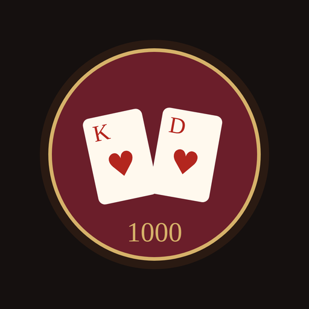
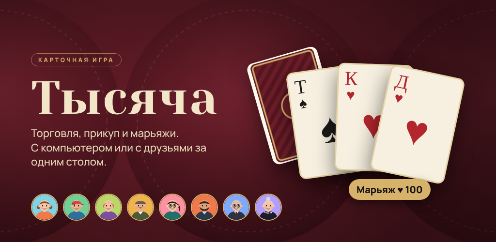

Классическая карточная игра до 1000 очков: торговля, прикуп, марьяжи, козыри и росписи. С компьютером на восьми уровнях или с друзьями за одним столом – даже без интернета.
Восемь персонажей: от Тоси, которая только знакомится с картами, до Адвоката, который просчитывает каждую раздачу до конца. Играют 2, 3 или 4 игрока. Движок считает на телефоне, без сервера.
Русские и украинские (торговля по 5, бочка 880, три нуля), польские домашние или как на kurnik.pl. Каждое правило – переключатель. Дополнения: 555, четыре туза, игра втёмную.
2–4 телефона за одним столом, без интернета и аккаунтов. Присоединяйтесь из списка, по коду или QR-коду. Свободные места могут занять боты, а если кто-то отключится, бот играет за него до возвращения.
Подсказки движка в тренировке с компьютером, история каждой раздачи с повтором и оценка Ваших решений. Для начала – обучение: одна раздача шаг за шагом.
Каждый день одинаковые карты для всех. Ранги от Ста до Тысячи, статистика и награды – отдельно также для игры с друзьями.
Русский, украинский, английский и польский. Игра работает без интернета. Описания для программ чтения с экрана, крупные области касания и тексты без привязки к полу.

Скоро в Google Play и App Store.